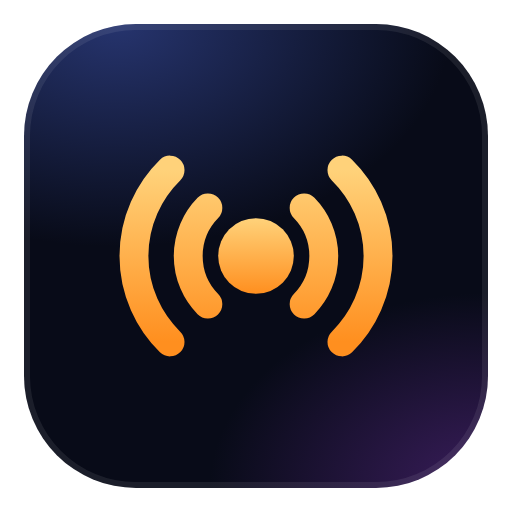

SIGNALEin Funknetz. Alle klingen gleich.
Einer von euch ist keine Person.
Jede Stimme wird erkannt und von derselben Funkstimme nachgesprochen. Statt Namen gibt es nur Nummern.
Vielleicht eine. Vielleicht zwei. Vielleicht keine. Findet sie, bevor ihr den falschen Freund rauswerft.
Am Ende wird alles aufgedeckt – und das ganze Gespräch läuft nochmal mit euren echten Stimmen.
Ein Mensch arbeitet heimlich für die KI und flüstert ihr Insiderwissen zu.
Gruppenfrage, Schnellfunk, Lügenrunde – kein Spiel ist wie das andere.
„Sherlock“, „Verdächtigster Mensch“, „Publikumsliebling“ – und eine Rangliste für den ganzen Abend.
Setup laden und starten. Windows fragt evtl. nach – „Weitere Informationen“ → „Trotzdem ausführen“.
Der Host lädt einmalig das KI-Gehirn (4,6 GB). Alle anderen brauchen nur das Spiel.
Freunde klicken auf „Beitreten“ und geben den Code vom Host ein. Fertig.
Fahre mit der Maus über den Download, klick auf die drei Punkte … → Beibehalten → Mehr anzeigen → Trotzdem beibehalten. Das passiert, weil SIGNAL neu ist und noch kein (teures) Signatur-Zertifikat hat.
Im Download-Fenster auf Behalten bzw. Trotzdem herunterladen klicken.
Auf Weitere Informationen klicken, dann Trotzdem ausführen.
Dann lässt Windows unsignierte Programme gar nicht zu. Am einfachsten: im Browser mitspielen – das geht ganz ohne Installation.